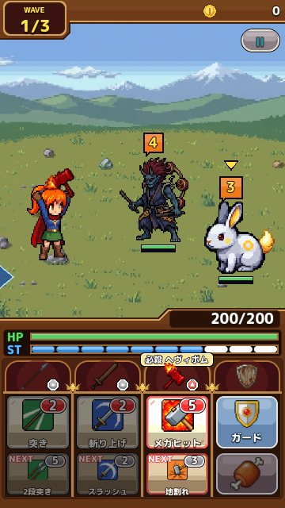
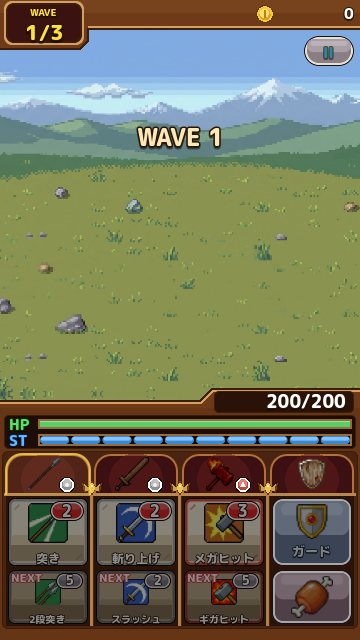

戦いの基本：ターンとカウント
敵の頭の上の数字（カウント）の読み方と、1 ターンの流れを図解します。 更新：2026-11-13
ターン制のしくみ
キシドラ！の戦いはターン制です。主人公が 1 回行動すると、敵のカウントが 1 つ減ります。カウントは敵の頭の上に出ている数字で、0 になった敵がその場で攻撃してきます。攻撃したあと、カウントはその敵の決まった数にもどります。
つまり、カウントが 1 の敵がいるときは、次の行動のあとに攻撃が来るという合図です。カウントの小さい敵から先にたおすか、ガードの準備をしておくか、毎ターン考えながら戦うのがこのゲームの楽しいところです。

こちらの番にできること
- スキルで攻撃：武器の札をタップすると、その武器の今のスキルで攻撃します。スキルには ST を使います
- ねらいを変える：敵が何体かいるときは、敵をタップすると攻撃する相手を選べます
- お肉：お肉のボタンは、決まった場面で使う特別な行動です（宝を守る敵などで出番があります）
- メニュー：右上のボタンで戦いを止めて、ステータスや手に入れた品を確かめられます
札の下にある「NEXT」は、次に出るスキルです。武器ごとにスキルの並びが決まっていて、使うたびに次のスキルへ進みます。NEXT を見て、どの武器をいつ使うかを考えると、必殺技をねらいやすくなります。
ST（スタミナ）の管理
ST は画面下の青いゲージです。強いスキルほど多くの ST を使います。ST が足りないとスキルが出せないので、次のような方法で取りもどしながら戦います。
- ジャストガードで ST が 2 回復します
- ミラクルガードでは ST が満タンになります
- スタンしている敵を攻撃すると、1 回ごとに ST が回復します
ガードがうまくなるほど ST に余裕ができ、強いスキルを続けて出せるようになります。攻撃と防御がつながっているのが、このゲームの戦いの特徴です。
WAVE と STAGE
1 つの STAGE は、いくつかの WAVE（敵の波）でできています。その WAVE の敵を全部たおすと次の WAVE の敵が出てきて、最後の WAVE をこえるとクリアです。左上の「WAVE 2/3」のような表示で、今いくつ目かがわかります。
敵が落とした宝箱や袋は、クリアしたあとの画面でまとめて開けます。途中で戦いをやめると、その STAGE で拾った品はもらえないので注意してください。

戦いの画面の見方
- 左上：今の WAVE と、全部でいくつあるか
- 右上：このステージで拾ったコイン。止めるボタンもここにあります
- 真ん中：主人公と敵。敵の頭の上の数字がカウント、名前の下のゲージが HP です
- HP と ST のゲージ：緑が HP、青が ST。HP の数字は右側に出ます
- 下の札：左から武器の札、いちばん右がガードボタンとお肉のボタンです
主人公を長押しすると、今かかっている効果（攻撃力が上がっている、など）が一覧で出ます。敵を長押しすると、その敵の弱点が出ます。どちらも戦いの途中でいつでも確かめられるので、迷ったらまず長押ししてみてください。
複数の敵がいるとき
敵が 2 体、3 体と並んでいるときは、それぞれのカウントがばらばらに減っていきます。全部の敵のカウントが同じ数になると、続けて攻撃が来ることもあります。カウントの小さい敵、HP の少ない敵、厄介な攻撃を持つ敵のどれから倒すかを考えるのが、ターン制ならではのおもしろさです。
攻撃する相手は、敵をタップして選びます。選んだ敵の上には小さな矢印が出ます。選び忘れると、思っていない敵を攻撃してしまうので注意しましょう。